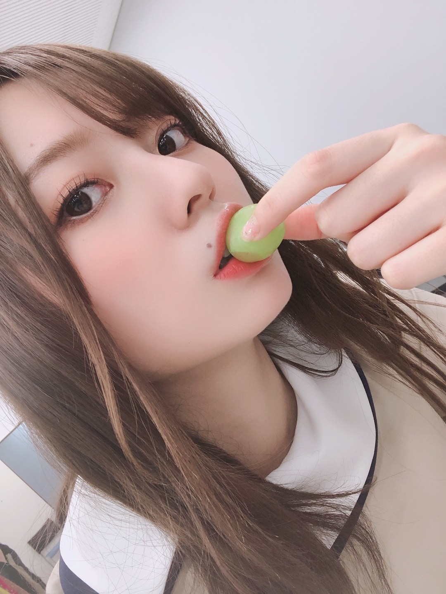
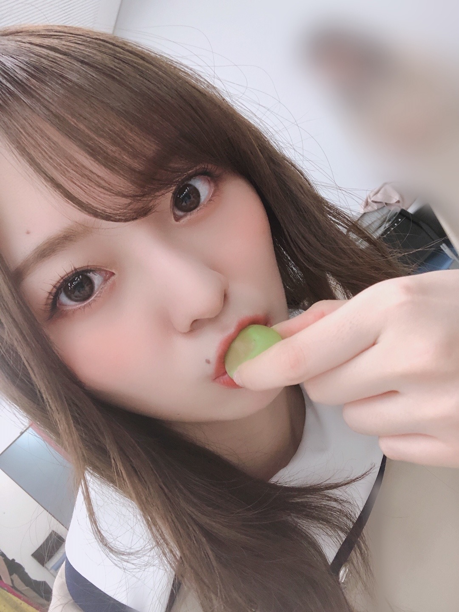

考えた時間で答えが変わる気分屋さんなようです

現場にて頂いたマスカット。
わたしのお家にも常に
フルーツが充実してます。
お腹いっぱい食べるフルーツ最高です、、
毎日、朝のフルーツを楽しみに
眠りにつきます。

今の一番のお気に入りはマスカットかなあ☀︎
さて！
ドラマ「映像研には手を出すな！」の
DVD&Blu-rayが９月１６日に発売致します！
映画の直前の販売なので
こちらでぜひ予習していただいて
映画館での映像研をより一層楽しんじゃってください︎︎︎︎✌︎
ビジュアルコメンタリーなども収録されるようなので
詳しくは公式ホームページをご覧下さいませ！
いつもお仕事直前は
こんな感じで前髪カーラーしてます
特に今はマスクをすることが多いので
すぐ湿気で前髪ぺたんとなっちまうので
カーラーは必需品だったりもします。
前髪流すのと作るのと、
基本両方出来るようにしているのだけど
どっちがいいのだろう、、
完全にいつも気分で決めるけど
どちらがお好きですか( '-' )？
なんだか、こう、どんどん
顔にほくろが増えてく気がしてる
なんで、、
色々と考える時間も増えました！
考えてみればわたしは
いつしかの自分より 今の自分のほうが
少し前向きで 強く どこか明るくなった気がしています！
自分のことが好きです！ と
堂々と胸を張って言える大人に憧れますが
どうしてもまだ そうは言えません。
理想の自分へはまだまだ到底及びませんが
前の自分よりは、
今の自分の方が好きです☀︎
だいぶ大きな一歩です！
少しずつでいいんです、
刻一刻と過ぎる時間に 焦りを感じるときも多々ありますが
時間と経験とともに 明らかにちゃんと どこか変われている自分がいます︎︎︎︎✌︎
時間はかかるけどねえ( '-' )
何故にこう 気持ちの変化が現れたのかはよく分かりませんが
明るくいたいと思うようになりました！
笑顔は伝染していくものです。
この時期だからこそ感じたことです。
意識せずふいに耳にした言葉や
目に入ったものに
自然と影響を受けてることも多いんだろうなあ。
そういったものにきちんと
気づける人になりたいなあ。
それに私ももう、２２歳になる年です。
なんだかこう、
一日が過ぎていく度に感じる
昔とはどこか違った ずっしり どっしり とした
時間の重みがすごいです。（笑）
色んな人の人生があって
ふと誰かの生き方と見比べてしまいそうになります。だけど
自分の人生に前例なんてないんだから
何も分からなくて不安になって当たり前︎︎︎︎︎︎︎︎ですよね☀︎
とにかく今は
早く皆様にお会いしたいです！
たくさんの方と触れ合って
色んなお話をして
毎日をもっともっと華やかにしたいです！
もうしばしの我慢です。
離れたところから
笑顔を送りますから、
受け取ってくださいね︎︎︎︎！！
昨日の乃木中、観てくれましたか？
内輪ウケモノマネ、
すごく好きな企画です！
収録も最高に楽しかった！
来週もお楽しみに☀︎
さあ！明日も頑張りましょう！
ああ、、
自分の写真ばかりですみません、、
早くみんなにギューッとして
みんなで画面いっぱい埋めつくして
笑顔いっぱいでカメラを構えたいものです。
では。
また更新します。
みんなが幸せになりますように
Original：https://www.nogizaka46.com/s/n46/diary/detail/57087?ima=4938&cd=MEMBER